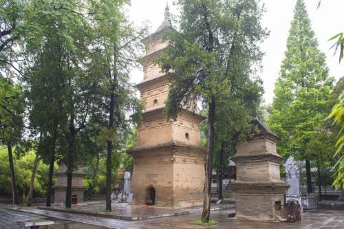

Тянь-Шанский коридор является участком широкой сети маршрутов Шелкового пути. Коридор длиной около 5 тысяч километров входит в обширную сеть торговых путей, раскинувшихся на 8700 км и связывавших Чанъань в центральном Китае с Центральной Азией в период между II веком до н.э. и I веком н.э., когда начала расширяться торговля ценными товарами, в частности, шёлком, между Китайской и Римской империями. Его расцвет пришёлся на период с VI по XIV века н. э., и коридор продолжал использоваться как крупный торговый путь до XVI века.
Экстремальные географические характеристики маршрутов наглядно иллюстрируют трудности, которые приходилось преодолевать в ходе этой дальней торговли. Спускаясь на 154 метра ниже уровня моря и поднимаясь на высоту 7400 метров, маршруты проходят через великие реки, горные озера, твёрдые солончаки, бескрайние пустыни, заснеженные горы и «плодородные» степи. Климатические условия варьируются от сильной засухи до полувлажного климата, в то время как растительность охватывает умеренные леса, умеренные пустыни, умеренные и горные степи и оазисы. Более подробная информация об этом памятнике размещена на сайте Всемирного наследия ЮНЕСКО.
